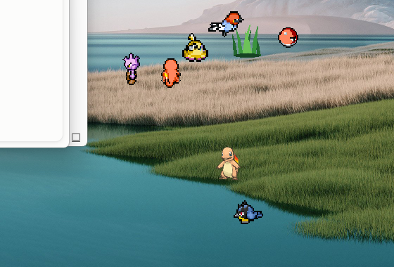
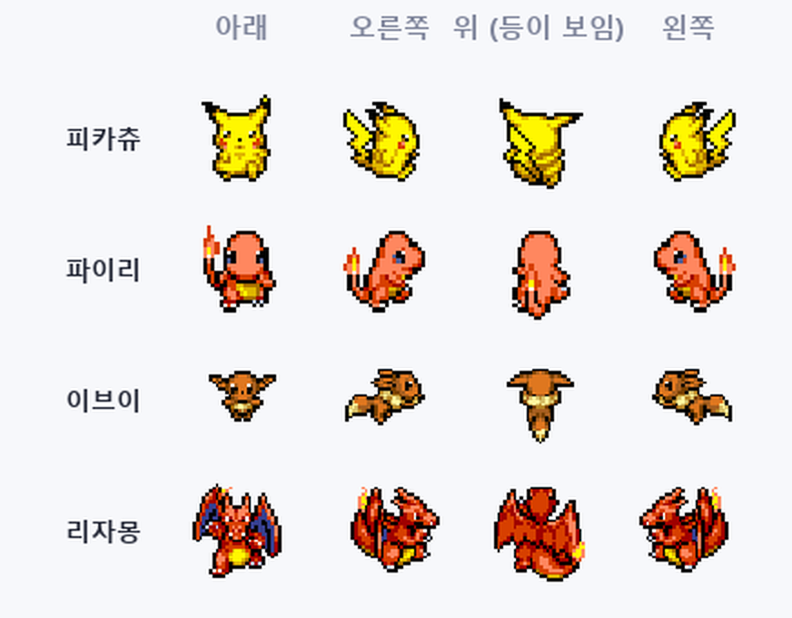

바탕화면 포켓몬 육성
일하는 화면 한켠에서 포켓몬이 걸어다닙니다
켜 두면 풀숲이 돋고 야생 포켓몬이 나타납니다. 잡아서 키우고, 관장과 다른 사람에게 도전하세요.

풀숲이 돋으면 눌러 보세요. 게임에서도 이렇게 만납니다.

미끄러지지 않고 발이 바뀝니다
가는 방향에 따라 몸을 돌리고, 위로 올라가면 등이 보입니다. 한동안 안 건드리면 그 자리에서 잠듭니다.
켜 두면 생기는 일
별도 화면이 없습니다. 풀숲도 배틀도 진화도 바탕화면 그 자리에서 벌어집니다.
풀숲이 돋습니다5~7분에 한 번입니다. 누르면 야생 포켓몬이 나옵니다.
싸우거나 던집니다왼쪽 클릭은 배틀, 오른쪽 클릭은 던질 볼 고르기입니다.
자라고 진화합니다레벨이 오르면 기술을 배우고, 조건이 맞으면 그 자리에서 진화합니다.
도구가 떨어집니다잡으면 30%, 쓰러뜨리면 45% 로 도구를 줍습니다.
팀이 생깁니다여섯 마리를 데리고 다니고 나머지는 PC 박스에 둡니다.
다 키웠다면
혼자 키우는 데서 끝나지 않습니다. 전국의 관장, 다른 사람의 팀, 같은 길드의 사람들이 기다립니다.
설치 없이 5분
받아서 풀고 실행하면 끝입니다. 한 번 받으면 새 버전은 켤 때 알아서 받습니다.
받습니다윈도우는 zip 을 폴더째 풀고 안의 exe 를 실행합니다. 맥은 dmg 를 열어 Applications 로 끌어다 놓습니다.
가입합니다닉네임과 숫자 4자리면 됩니다. 윈도우와 맥이 같은 서버를 씁니다.
고릅니다1~9세대 스타팅 27마리 중 하나를 고르면 바탕화면에 나타납니다.
안내서에 다 있습니다
숫자와 규칙은 게임에서 실제로 쓰는 값 그대로 적었습니다.